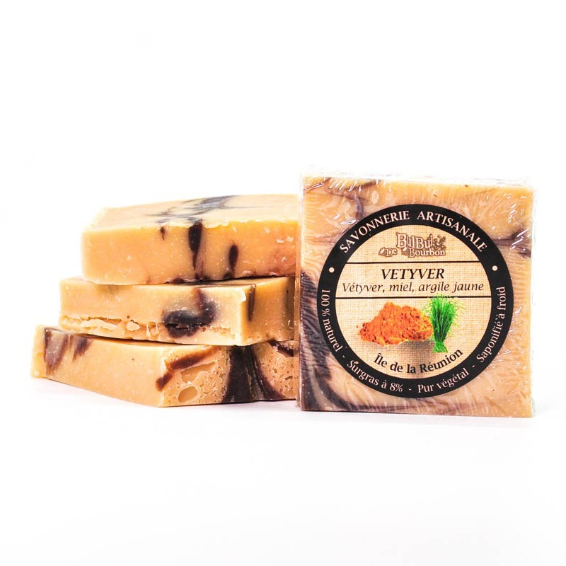

Tournesol
Savon bio, fait de cacao, laissant la peau lisse et doux,les clients adorent l'odeur d'arôme de cacao.

Fresh
Savon naturel, fait de chanvre, utilisé pour ses propriétés anxiolytiques, nos clients l'adorent

Ayurvedique
Savon végétal, fait de concombre et de citron, rajeunissant les cellules de la peau, très demandé par la clientèle.

Fenugrec-Neem
Savon bio, irreprochable , aromathique apaisant et anti-age laissant.

vetyver
Savon naturel, fait de vetyver, miel et de l'argile jaune, laissant la peau lisse et doux,les clients adorent l'odeur d'arôme de cacao.

Main-verte
Savon naturel, sans huile de palme, exfoliant servant à éliminer les cellules mortes.